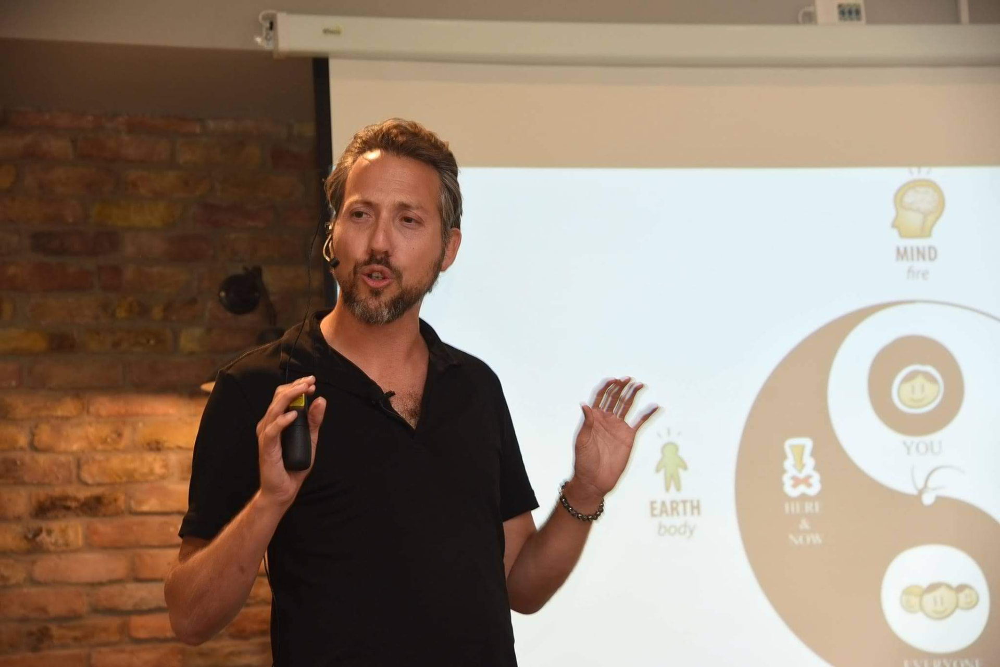

The long version
You’re not stuck. You’re writing a redemption story.
Stop battling. Start remembering.
Seven years handing out the medicine. Thirty hiding behind it. This is everything the short page leaves out.
The reframe
I call the pattern outsourcing.
You’re outsourcing your power. Your creativity. Your divinity. Your story.
A label can sound like something you have. A defect. A diagnosis. A thing that is wrong with you.
Outsourcing is something you’re doing. You filed something of yours somewhere outside yourself, then kept going back to collect it.
Your calm in a cigarette. Your creativity in a vape. Your belonging in a ceremony. Your worth in whether she answers.
You didn’t lose the thing.
You just don’t keep it at home.
The four outsourcings
Find where you left it.
Four relationships run at once. When one goes quiet, it looks for a substitute out there.
Vitality
Flowing
Health, sleep, presence, vitality.
Outsourced
Smoking, vaping, drinking, no vitality left in the day.
Creativity
Flowing
Creativity, identity, decisions.
Outsourced
Approval, anxiety, masks, a career that is not yours.
Love
Flowing
Love, intimacy, community, belonging.
Outsourced
Codependence. Needing to be chosen before you can rest.
Divinity
Flowing
The unknown, the mystery, flow.
Outsourced
The next teacher. The next retreat. The next ceremony.
Which one is yours? Don’t fix it. Name it, then watch it.
The verb nobody questioned
The recovery world fixed the nouns.
The recovery world has spent a decade arguing about its nouns. Addict. Junkie. Alcoholic. Clean. Dirty. All of it worth arguing about, and all of it fixed the labels.
Nobody touched the verb. Battling. Fighting. The war on. Losing the fight. It’s in every obituary, every meeting, every treatment centre’s brochure, and it has never once been questioned by the people reforming everything around it.
It turns out the verb is the problem. A linguistics team analysed around 1.5 million words of patient discussion and concluded that battle metaphors are negative enough for enough people that they shouldn’t be imposed on anyone. Published work found that battle metaphors undermine treatment and prevention, and do not increase vigilance. In the addiction literature the cost is named directly: constant conflict is exhausting, and it produces burnout or a sense of failure after a setback.
That’s the relapse cycle, explained by the metaphor rather than the person.
In the old stories the hero has to battle. That’s the only shape anybody ever handed you, and then they handed you the same shape for your own life. There’s another one. You’re not stuck. You’re writing a redemption story. You pawned something valuable, you got something for it, and it’s still in the shop.
Gabor Maté spent decades asking not why the addiction, but why the pain. I got to the same place from a ceremony room.
The part nobody explains
So why do we outsource in the first place?
You’re not ashamed because you use. You use because you’re ashamed.
Not because we’re weak. Not because we’re broken. And not because we’re avoiding pain in some general way.
We’re getting above shame. Something learned young: there is something wrong with you. You believed it because you were a child.
Then you found something that got you above it. It worked. When the lift wore off, the shame was still there, with a second layer about the numbing itself.
So you went to war with the thing that helped. The war made more shame. More shame needed more getting above. That’s where the years went.
The road isn’t up. It’s down.
Drop the verdict. Nothing is wrong with you, and never was. What remains is the honest distance between who you are and who you haven’t been yet.
The turn
You’re not lost. You’re unaccompanied.
And none of this is going back.
Nobody handed you a map. There wasn’t one. You went anyway, into the ceremonies, into the medicine, into the questions nobody around you was asking. That’s not somebody who got lost. That’s a pioneer.
You’ve been out ahead this whole time. The only thing that went wrong is that it stopped going anywhere.
So this isn’t recovery, if recovery means getting back to who you were before. There is no before. There’s just more road, and everything you’ve been through is what you’re going to build with.
There are millions of us out here. Pioneers, story rebels, consciousness pirates, building whatever comes after the internet and the algorithms and the noise, with no institutions, no elders, and no each other.
Nothing is wrong with you. We just need to stick together.
Which act are you in
Four acts. You’re in one.
- 01
Forgetting
You were born into it. Something is wrong with you, and you believed it.
I’m here - 02
Seeking
You reached outside. Teachers, medicines, jobs, lovers. It worked, for a while.
I’m here - 03
Autocorrect
Life crashed the car. Everything you skipped came up.
I’m here - 04
Remembering
You stop looking outside. You take the pen back.
I’m here
Nothing has gone wrong if you are in act three. That is where the turn happens.
Who I am
I was born into this. Then I did it all over again.
I was raised inside a strict religious world. My parents were spiritual people who were also caught in their own outsourcing. I grew up watching what happens when medicine arrives without language.
At twenty nine, my heart opened in ceremony. I went further in and served for seven years. I was also hiding behind the same medicine I handed out. I told myself it was how shamans work. It wasn’t.
I turned around. I started recording every morning. I’m from the future, further up the same road, still walking. Everything I do now is the language nobody gave us.

- 15 years
- studying story
- 7 years
- running ceremonies
- 2,000+
- morning videos
- Since 2003
- hypnotherapy training · verify